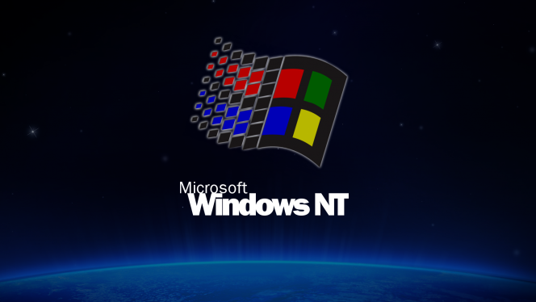

Cuando Windows NT sale al mercado el 27 de julio de 1993, Microsoft alcanza un hito importante: la conclusión de un proyecto iniciado en la década de 1980 para crear un nuevo y avanzado sistema operativo desde cero. "Windows NT representa nada menos que un cambio fundamental en el modo en que las organizaciones pueden abordar sus requisitos informáticos empresariales", afirma Bill Gates en su lanzamiento.
Windows NT 3.1 es un sistema operativo de 32 bits, convirtiéndolo en una plataforma empresarial estratégica compatible con programas científicos y de ingeniería de última generación.

Logo de Windows NT
Ir a...
Inicio